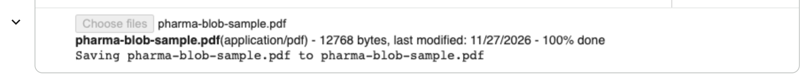
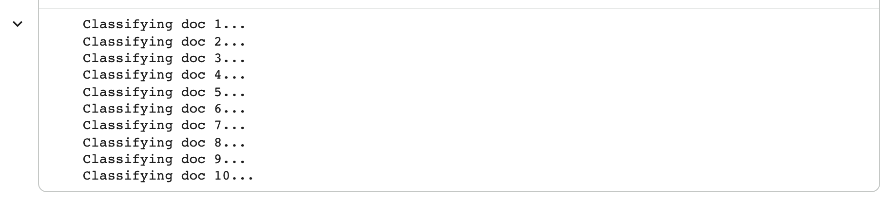
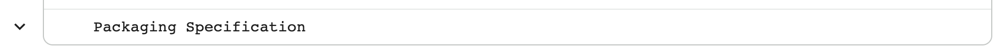
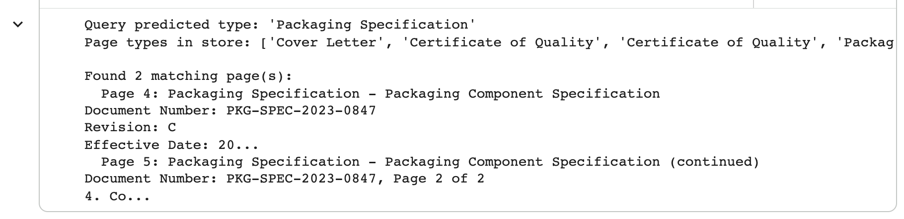

Use document-level metadata and smart prompting to determine which file(s) are most relevant to the query, before any embeddings or full-text search are applied.
Refer to this Colab notebook to see how queries are classified and routed to the right PDFs using metadata, no embeddings needed.
pharma-blob-sample.pdf. It's the same 10-page file you split in Step 1.GEMINI_API_KEY, as in Step 1.The whole notebook takes about 2 minutes to run. Run the cells from the top down, in order, and wait for each green tick before you press the next Run.
Find the cell with # STEP 1: Install Required Libraries near its top, and press Run:
Like every cell in this notebook, it starts with a comment block: lines that start with # and say what the cell does. Python skips them, so they're there only for you to read. From here on, the slides show only the code under each comment block:
!pip install -q llama-index==0.14.26!pip install -q llama-index-readers-file==0.8.0!pip install -q google-genai==2.12.1What this code does:
google-genai, which talks to Gemini. The == numbers ask for the exact versions we tested in Colab in November 2026.What you'll see in Colab:
Nothing prints. In our run, this cell took about a minute. When it has a green tick, move on.
Press Run on the cell that starts with # Upload the sample PDF:
# Upload the sample PDF# Click "Choose Files" below and pick pharma-blob-sample.pdf from your computer.# Colab saves it in /content, where the next cell looks for it.from google.colab import filesuploaded = files.upload()pharma-blob-sample.pdf, the file you downloaded on slide 1./content, where the next cells look for it.What you'll see in Colab:

(opens the picture full size in a new tab)Find the cell with # STEP 2: Load the Pharmaceutical Blob PDF near its top, and press Run:
from llama_index.readers.file import PDFReaderimport time# Load the PDFloader = PDFReader()documents = loader.load_data("/content/pharma-blob-sample.pdf")# Preview to confirm it workedprint(f"Loaded {len(documents)} pages")print(documents[0].text[:300])What this code does:
PDFReader().load_data(...) reads the PDF and returns one Document (a LlamaIndex object that holds text) per page, in a list called documents.What you'll see in Colab:
Loaded 10 pages
Cytiva
100 Results Way
Marlborough, MA 01752
United States
Page 1 / 1
cytiva.com
3 June, 2022
Re: AKTA ready Flow Kit Storage Conditions
To Whom It May Concern,
The recommended storage temperature for standard AKTA ready flow kits is provided in Section 8.3 of the Operating
Instructions 28960345 andLoaded 10 pages: every page of the bundle is in documents.documents now holds the 10 pages, ready for their metadata.
When users upload pharmaceutical PDFs, don't just save the raw file. Attach useful metadata that helps identify what the document contains.
Let's walk through the Python snippet that captures metadata during file upload. It starts with the values every page will share:
import uuidfile_id = str(uuid.uuid4()) # Assigns Unique IDuser_id = "xyz"year = "2024"filename = "pharma-blob-sample.pdf"pdf_metadata_store = []What this code does:
uuid.uuid4() makes a random ID for the file, so every upload gets its own file_id.year is the value the code sets, "2024", for every page. It isn't read from the PDF.pdf_metadata_store starts as an empty list, ready for one entry per page.Find the cell with # STEP 3: Store File-Level Metadata near its top, and press Run:
for i, doc in enumerate(documents): metadata = { "file_id": file_id, "user_id": user_id, "doc_type": "unknown", # We'll classify it later "year": year, "filename": filename, "page_number": i + 1, "text": doc.text } pdf_metadata_store.append(metadata)print("Stored Metadata:")print(pdf_metadata_store[0])What this code does:
pdf_metadata_store."doc_type": "unknown" is a placeholder. You'll replace it with a real label a few slides on.What you'll see in Colab:
{'file_id': 'aaaff2fb-d8cc-48ce-949f-e2ead40ba44d', 'user_id': 'xyz', 'doc_type': 'unknown', 'year': '2024', 'filename': 'pharma-blob-sample.pdf', 'page_number': 1, 'text': 'Cytiva\n100 Results Way\nMarlborough, MA 01752\nUnited States\nPage 1 / 1\ncytiva.com\n3 June, 2022\nRe: AKTA ready Flow Kit Storage Conditions\nTo Whom It May Concern,\nThe recommended storage temperature for standard AKTA ready flow kits is provided in Section 8.3 of the Operating\n...file_id will be different: it's random each time you run the cell.'doc_type': 'unknown' is the placeholder. Every other field is filled in, including the whole text of the page.pdf_metadata_store now holds 10 dictionaries, one per page.
Find the cell with # STEP 4: Set Up Gemini LLM Connection near its top, and press Run:
from google import genaifrom google.colab import userdataimport timeMODEL = "gemini-3.5-flash-lite"client = genai.Client(api_key=userdata.get('GEMINI_API_KEY'))def gemini_model(prompt, retries=3): for attempt in range(retries): try: response = client.models.generate_content(model=MODEL, contents=prompt) return response.text except Exception as e: busy = any(s in str(e).lower() for s in ["429", "503", "overloaded", "resource_exhausted", "unavailable"]) if busy and attempt < retries - 1: wait = 30 * (attempt + 1) print(f"Gemini is busy, retrying in {wait}s...") time.sleep(wait) else: raiseWhat this code does:
gemini_model(prompt), which sends a prompt to Gemini 3.5 Flash-Lite and returns its answer.Now comes the interesting part: using a small LLM to figure out which files match a user's question. Instead of simple keyword matching, we'll send the user's query and a summary of all uploaded files to an LLM like Gemini to get a smart prediction of which files are most relevant.
You can do this by:
The cell starts with two lists of the same 8 labels:
# Valid document type labels used throughout this notebookVALID_DOC_TYPES = [ "cover_letter", "certificate_of_quality", "packaging_specification", "bse_tse_declaration", "material_description", "supplier_qualification", "chain_of_custody", "unknown"]# The same 8 labels, spelled as in the other Project 7 notebooksLABEL_NAMES = { "cover_letter": "Cover Letter", "certificate_of_quality": "Certificate of Quality", "packaging_specification": "Packaging Specification", "bse_tse_declaration": "BSE/TSE Declaration", "material_description": "Material Description", "supplier_qualification": "Supplier Qualification", "chain_of_custody": "Chain of Custody", "unknown": "Other"}Next in the same cell are two functions. Read this half first:
def clean_llm_label(response): """Clean up LLM response to extract a valid doc_type label.""" cleaned = response.strip().replace('"', '').replace('`', '').replace('*', '').lower().replace(".", "").strip() # Check if the cleaned response contains a valid label for label in VALID_DOC_TYPES: if label in cleaned: return LABEL_NAMES[label] return "Other"def classify_query_llm(query, metadata_store): doc_list = "\n".join( [f"{i+1}. {doc['filename']} - doc_type: {doc['doc_type']}" for i, doc in enumerate(metadata_store)] )What this code does:
packaging_specification. LABEL_NAMES (on the last slide) turns each one into the spelling the other Project 7 notebooks use, such as Packaging Specification, and unknown into Other. One spelling everywhere means a filter on a label always finds it.clean_llm_label tidies Gemini's answer (no quotes, no capitals, no full stops) and returns the matching label from LABEL_NAMES, or Other.classify_query_llm starts by building the summary, doc_list: one line per page with its filename and its doc_type. It never sends the page text.Find the cell with # STEP 5: Classify User Query by Document Type near its top, and press Run:
prompt = f""" You are an intelligent assistant that routes user queries to the most relevant pharmaceutical document. Available documents: {doc_list} User query: "{query}" Which document(s) are most likely to contain the answer? Respond with one of the following types: ["cover_letter", "certificate_of_quality", "packaging_specification", "bse_tse_declaration","material_description", "supplier_qualification", "chain_of_custody", "unknown"] Respond with ONLY the label. No explanation. """ response = gemini_model(prompt) return clean_llm_label(response)What this code does:
Assign a doc_type to Each Page. Use your classify_doc_type_llm() function to loop through each page in pdf_metadata_store, use the LLM to classify the page's content into a doc_type, and update each page's dictionary with the predicted type.
Find the cell with # STEP 7: Classify Document Content near its top, and press Run:
def classify_doc_type_llm(text, max_chars=1000): truncated_text = text[:max_chars] prompt = f"""You are classifying a pharmaceutical document into one of the following types:["cover_letter", "certificate_of_quality", "packaging_specification", "bse_tse_declaration","material_description", "supplier_qualification", "chain_of_custody", "unknown"]Document content:\"\"\"{truncated_text}\"\"\"What is the best doc_type label for this document? Respond with ONLY one of the labels above. No explanation.""" try: response = gemini_model(prompt) return clean_llm_label(response) except Exception as e: print("LLM failed:", e) return "Other"What this code does:
max_chars=1000). If the call fails, the page gets Other.Find the cell with # STEP 8: Apply Document Classification to All Pages near its top, and press Run:
for i, doc in enumerate(pdf_metadata_store): print(f"Classifying doc {i+1}...") doc["doc_type"] = classify_doc_type_llm(doc["text"]) time.sleep(1) # Avoid rate limitingclassify_doc_type_llm and saves the answer in that page's doc_type, then waits 1 second so Gemini isn't asked too fast.What you'll see in Colab:

(opens the picture full size in a new tab)In our run, this took about 18 seconds. If you see Gemini is busy, retrying in 30s..., let it run.
Classify the User Query. Use your classify_query_llm() function to take in a user query (e.g., "What are the part numbers listed in this document?"), prompt the LLM to return one of the known types, and store the result as predicted_doc_type.
This cell sits below the labelling cells in your copy, so every page already has its real label when the router reads the summary.
Find the cell with # STEP 6: Test Query Classification near its top, and press Run:
query = "What are the part numbers listed in this document?"predicted_doc_type = classify_query_llm(query, pdf_metadata_store)print(predicted_doc_type)What this code does:
predicted_doc_type keeps the router's answer, and the last line prints it.What you'll see in Colab:

(opens the picture full size in a new tab)The router read only the 10 labels and the question, and picked Packaging Specification, the document with a section called Part Numbers.
Once the query is labeled, you can route it directly to the right file type, so there's no need to search everywhere.
predicted_doc_type now holds 'Packaging Specification'.
Once you've classified the query, use metadata to fetch only the relevant files, no need for embeddings yet. For example, if the predicted doc type is BSE/TSE Declaration, retrieve all documents where doc_type = "BSE/TSE Declaration", or fetch just the most recent one if that makes more sense for your query.
Find the cell with # STEP 9: Retrieve Files by Document Type near its top, and press Run:
def retrieve_files_by_doc_type(doc_type, metadata_store): return [doc for doc in metadata_store if doc["doc_type"] == doc_type]# Debug: show what we're matching againstprint(f"Query predicted type: '{predicted_doc_type}'")print(f"Page types in store: {[doc['doc_type'] for doc in pdf_metadata_store]}")print()# Call the function using the predicted typematched_files = retrieve_files_by_doc_type(predicted_doc_type, pdf_metadata_store)# Display matched documentsprint(f"Found {len(matched_files)} matching page(s):")for doc in matched_files: print(f" Page {doc['page_number']}: {doc['doc_type']} - {doc['text'][:100]}...")What this code does:
retrieve_files_by_doc_type keeps only the pages whose doc_type is exactly the predicted type. This is a filter: no model and no search, just a match on the label.Debug lines print the predicted type and every page's label. The loop prints each match.Filter Pages by Predicted doc_type. Narrow your search: filter the list to only include pages whose doc_type matches predicted_doc_type, and store these as matched_documents. (In your notebook, this list is called matched_files.)
What you'll see in Colab:

(opens the picture full size in a new tab)The Page types in store line is longer than the box. In full, it reads:
Page types in store: ['Cover Letter', 'Certificate of Quality', 'Certificate of Quality', 'Packaging Specification', 'Packaging Specification', 'BSE/TSE Declaration', 'Material Description', 'Supplier Qualification', 'Supplier Qualification', 'Chain of Custody']There may be cases where multiple documents match, or where the query is vague (e.g., "Show me all supplier documentation"). Here's what you can do: use the metadata + LLM to narrow down to a handful of files. Then apply embeddings + vector search only within those few files.
Your notebook's Step 4 does that last search with keywords instead: if your metadata filter still leaves too many results, or the user's query is vague, you can run a keyword-based search, but only within the smaller set of matching pharmaceutical documents.
Find the cell with # STEP 10: Fallback near its top, and press Run:
def keyword_search(query, documents): query = query.lower() keywords = ["part number", "article number", "item", "specification", "product", "certificate", "lot", "description", "sterilization", "BSE", "supplier"] for doc in documents: text = doc["text"].lower() if any(keyword.lower() in text for keyword in keywords): return doc return Noneuser_query = "What part numbers are listed?"print("Best matching result (fallback):")print(keyword_search(user_query, matched_files))What this code does:
keyword_search returns the first matched page holding any word in keywords, such as "lot".query isn't used to pick a page.(Optional) Fallback Search. If needed, run a keyword-based fallback: search for relevant terms (e.g., "part number", "article number", "specification", "certificate", "lot", "sterilization", "BSE", "supplier") inside matched_documents, and return the best match if multiple results exist.
What you'll see in Colab:
Best matching result (fallback):
{'file_id': 'aaaff2fb-d8cc-48ce-949f-e2ead40ba44d', 'user_id': 'xyz', 'doc_type': 'Packaging Specification', 'year': '2024', 'filename': 'pharma-blob-sample.pdf', 'page_number': 4, 'text': 'Packaging Component Specification\nDocument Number: PKG-SPEC-2023-0847\nRevision: C\nEffective Date: 2023-11-08\nComponent: AKTA ready Flow Kit Packaging Assembly\nDrawing Reference: DWG-29477427-PKG-R3\n1. Scope\nThis specification defines the packaging configuration for AKTA ready Flow Kit assemblies, including primary and\nsecondary packaging components.\n...His page's tip: embeddings are great for vague queries like "show me compliance documentation", but use them after you've already narrowed things down. You'll search with embeddings inside one document type in the next reading.
Return the Final Output. Export your final routing result as a dictionary containing query, predicted_doc_type and matched_documents (each with full metadata).
Your notebook already holds all three: query, predicted_doc_type and matched_files. Put together in his expected output format, our run's result looks like this:
{
"query": "What are the part numbers listed in this document?",
"predicted_doc_type": "Packaging Specification",
"matched_documents": [
{"file_id": "aaaff2fb-d8cc-48ce-949f-e2ead40ba44d", "user_id": "xyz",
"doc_type": "Packaging Specification", "year": "2024",
"filename": "pharma-blob-sample.pdf", "page_number": 4,
"text": "Packaging Component Specification\nDocument Number: PKG-SPEC-2023-0847\n..."},
{"file_id": "aaaff2fb-d8cc-48ce-949f-e2ead40ba44d", "user_id": "xyz",
"doc_type": "Packaging Specification", "year": "2024",
"filename": "pharma-blob-sample.pdf", "page_number": 5,
"text": "Packaging Component Specification (continued)\nDocument Number: PKG-SPEC-2023-0847, Page 2 of 2\n..."}
]
}file_id will be different.Load a Set of Documents. Prepare a small list of PDFs (or dummy docs) with basic text excerpts and metadata. You can simulate uploads:
The first PDF is the supplier bundle you just routed. The second is another 10-page supplier bundle, from a different supplier, named Another Sample - pharma-blob-test.pdf.
We didn't run the second PDF through this notebook, so there's no output on these slides to compare yours with. If you try it, its pages may hold document types that aren't in the 8 labels, and the router then answers Other. You don't need it for anything later in this project.